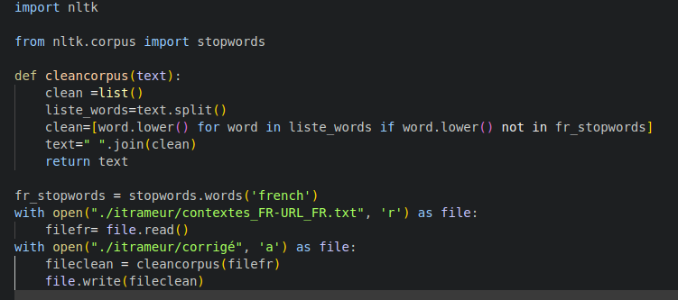

Cloud
Cloud FR

Le cloud Français
El famoso Cloud
Pour réaliser notre nuage de mot nous avons utilisé Wordcloud. Celui-ci a été installé avec la commande suivate pip install wordcloud
Il a été necessaire de faire une liste de mot vide , c'est à dire des mots qui ne sont pas pertinents pour notre sujet tels que les prépositions, articles etc...
Pour la réalisation de cette liste, nous avons utilisé une bibliothèque NLTK, celle ci a été installée et utilisée grace au langage de programmation python.
Le script python utilisé est le suivant :
Neanmoins il y avait encore des mots que nous ne voulions pas tels que : " page" "url" , nous avons donc crée une petite liste à coté pour completer les mots vides
la commande est : wordcloud_cli --text ./itrameur/contextes_FR-URL.txt --imagefile ./image.png --scale 2 --stopwords mot_vide_fr.txt

Nous pouvons voir à travers ce nuage la pluralité sémantique du terme étranger qui référe à des entités juridiques comme à des individus